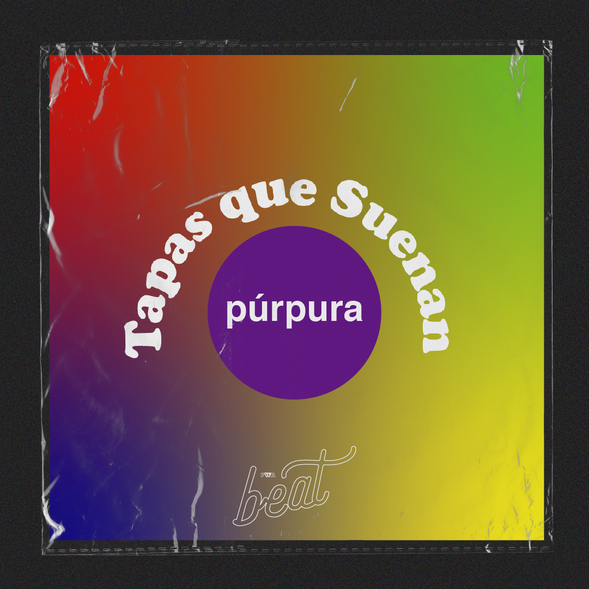

¡ultimos lanzamientos!
EPISODIOS
episodio 2
¿Qué tienen en común: Blur, Declan McKenna, Arctic Monkeys, Tame Impala, Deep Purple, Sara Hebe, Franz Ferdinand, Black Sabbath, Peces Raros, Spinetta, Sofi Tukker, Fito Paez, Evanescence, Prince, David Bowie, Babasónicos, Queen y Marilyn Manson? En esta segunda entrega Paula Balzola nos habla de aquellas tapas que suenan color violeta

episodio 1
Luego de 170 días de encierre social obligatorio en Argentina, Rayen Guido selecciona 5 recitales de rock&roll emblemáticos liberados en youtube para ambientar tu cuarentena o quizás para manijearte un rato si extrañas los recitales como nosotras. Dale, escuchalo, hacete un poguito🙌✨